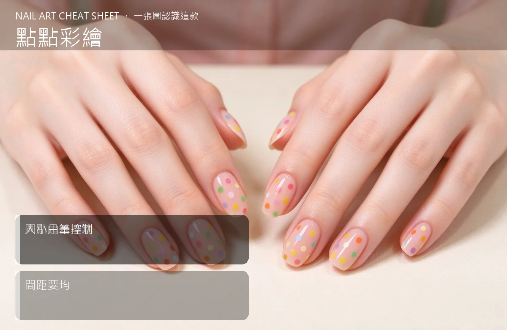

美甲點點彩繪是什麼？入門入門攻略
點點彩繪就是用點珠筆在甲面印圓點，大小靠筆頭、美感靠間距，新手第一款最友善。
點點彩繪原理與辨識重點：美甲師不說的圓點是基本功
點珠筆前端是一顆顆大小不一的圓球，沾一下色膠、往甲面一壓，就留下一個圓圓的點。用不同口徑的筆就能做出大小錯落的波卡圓，也能兩色交錯排成花邊、網紋或小花朵。它不靠手抖線、不靠比例，只要會『點』就有作品，是彩繪入門最沒有壓力的第一課。
誰適合做點點彩繪？新手第一款對號入座
完全沒畫過畫、又想做出有圖案的人最合；想快速幫客人跳一兩指做變化的美甲師也愛用，通勤款、可愛款都吃得開。
點點彩繪美甲施作步驟：點珠筆
上好底色照燈 → 選好點珠筆口徑 → 筆尖沾色膠、在調色盤刮掉多餘 → 對準位置垂直輕壓 → 一個一個點出間距 → 照燈 → 重點層再加小點 → 最後封層。
點點彩繪優缺點分析：美甲持久度與傷甲評估
| 優點 | 說明 |
|---|---|
| 工具便宜、上手超快，五分鐘就能跳出一整副，顏色隨便配都可愛。 | 是日系流派的招牌，入門就能上手 |
| 缺點 | 說明 |
| 圓點畫多了容易無聊，想要進階設計還是得再學線條或手繪。 | 前置與最怕一次沾太多膠，壓下去整坨潰開成一個大圓餅。筆尖要『薄薄一層』，壓完就抬起，不要在甲面來回磨。沒顧好會打折 |

點點彩繪新手雷區：大小由筆控制與常見錯誤
注意：最怕一次沾太多膠，壓下去整坨潰開成一個大圓餅。筆尖要『薄薄一層』，壓完就抬起，不要在甲面來回磨。
點點彩繪和其他美甲做法的差別比較
常跟法式、漸層混著做——法式指尖排一排小圓點、或在漸層底上灑點點，看起來更有層次；純白底＋黑點則是經典波卡。
點點彩繪美甲常見問題 FAQ
Q：點珠筆要買幾支？ A：新手先買一支三頭或五頭組合包，大、中、小各一種口徑就夠用，畫花、排點都靠它。
Q：沒有點珠筆可以用什麼代替？ A：牙籤、迴紋針頭、珠針筆蓋都能臨時頂一下，但圓度和大小會沒那麼飽滿，還是點珠筆最好用。